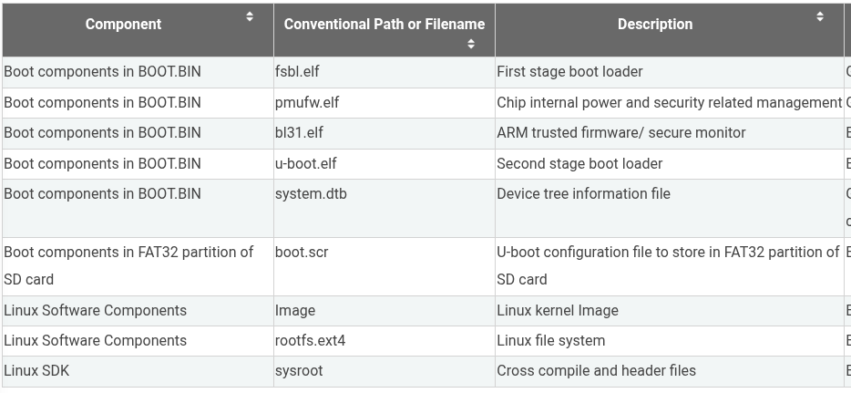

UG1144 - PetaLinux Tools Documentation
Create a new petalinux project:
petalinux-create project [-s <path-to-bsp>] --name <project-name> --template [versal|zynqMP|zynq|microblaze]Import hardware description:
petalinux-config --get-hw-description <path-to-xsa>Edit configurations:
petalinux-config -c [kernel|rootfs|u-boot|bootloader|pmufw|device-tree]Build:
petalinux-buildGenerate boot image:
petalinux-package boot --u-boot --fpga --forceCreate prebuilt directory:
petalinux-package prebuiltCreate BSP
petalinux-package bsp -p . --output MY.BSPUse QEMU emulator
petalinux-boot qemu --prebuilt [2|3]Create WIC image
petalinux-package wicCreate sysroot
petalinux-build --sdk
petalinux-package sysrootFlashing SD card
sudo dd if=petalinux-sdimage.wic of=/dev/sdX bs=4M status=progress conv=fsyncSteps to rebuild an application:
If using the default INITRD filesystem mode
Clean and rebuild app
petalinux-build -c <app> -x clean
petalinux-build -c <app>
Rebuild image.ub:
petalinux-build
Copy new image.ub into boot partition.
If using ext4
Clean and rebuild app
petalinux-build -c <app> -x clean
petalinux-build -c <app>
petalinux-build -c <app> -x install
Look in directory $PTLNX_DIR/build/tmp/work/cortexa72-cortexa53-xilinx-linux/<app>/1.0-r0/ to copy the executable.
How to use ext4 (use SD card partition as root filesystem)
In the petalinux project run
petalinux-config
and edit Image Packaging Configuration > Root Filesystem Type to ext4. Afterwards, add this chosen node to the system-user.dtsi.
/ {
chosen {
bootargs = "earlycon console=ttyPS0,115200 clk_ignore_unused root=/dev/mmcblk0p2 rw rootwait cma=512M";
};
};SD card errors
If you get this error:
mmc0: error -84 while initialising SD card during the boot
or this error:
[ 2.323385] mmc0: SDHCI controller on ff170000.mmc [ff170000.mmc] using ADMA 64-bit
[ 2.331244] Waiting for root device /dev/mmcblk0p2...
[ 2.367036] mmc0: new high speed SDXC card at address 59b4
[ 2.373031] mmcblk0: mmc0:59b4 MSSD0 117 GiB (ro)
[ 2.379332] mmcblk0: p1 p2
[ 2.392182] EXT4-fs (mmcblk0p2): INFO: recovery required on readonly filesystem
[ 2.399496] EXT4-fs (mmcblk0p2): write access unavailable, cannot proceed (try mounting with noload)
[ 2.408793] VFS: Cannot open root device "/dev/mmcblk0p2" or unknown-block(179,2): error -30
[ 2.417234] Please append a correct "root=" boot option; here are the available partitions:
Then try editing project-spec/meta-user/recipes-bsp/device-tree/files/system-user.dtsi to lower the speed of the SD and allow write access.
/include/ "system-conf.dtsi"
&sdhci1 {
no-1-8-v;
disable-wp;
};
PetaLinux Build Flow and File Reference
From Vitis Platform Creation Tutorial XD101:

This document provides a comprehensive overview of the PetaLinux build process, detailing the various files involved, their purpose, how they are generated, and their final use in booting an embedded Linux system on Xilinx (now AMD) platforms like ZynqMP and Versal.
1. Core Inputs & Configurations
The PetaLinux build process starts with a set of foundational inputs and configurations:
-
Hardware Design (XSA - Xilinx Support Archive):
-
What it is: An archive file exported from Vivado Design Suite or Vitis. It contains the hardware definition for your specific ZynqMP/Versal system, including the Processing System (PS) configuration, Programmable Logic (PL) design (if any), memory map, and peripheral settings.
-
Used to generate: Information for FSBL, PMU Firmware, Device Tree, and U-Boot configurations.
-
-
PetaLinux BSP (Board Support Package) / Project Configurations:
-
What it is: If starting from a BSP, it’s a
.bspfile containing default configurations, patches, and metadata for a specific development board. If starting a new project, these are the configurations you set within your PetaLinux project (e.g., viapetalinux-config). -
Includes settings for:
-
Kernel (features, drivers)
-
U-Boot (features, environment variables)
-
Root Filesystem (packages to include, init manager)
-
ARM Trusted Firmware (ATF)
-
Platform Management Unit Firmware (PMUFW)
-
-
Also includes sources or references for:
-
boot.cmd(source text file forboot.scr) -
image.its(Image Tree Source file forimage.ub)
-
-
Used to generate: Configurations for all software components.
-
-
Component Source Code:
-
What it is: The actual C, assembly, and other source files for the Linux kernel, U-Boot, ATF, FSBL, PMUFW, and all user-space packages/libraries that will form the root filesystem.
-
Origin: PetaLinux (which uses Yocto Project components) typically fetches these automatically from Xilinx Git repositories or other configured source locations based on the project configurations.
-
Used to generate: All compiled binary executables and libraries.
-
2. PetaLinux Build Process (petalinux-build)
This is the central stage where the inputs are processed to compile and generate intermediate software components.
2.1. Compilation of Low-Level Firmware & Bootloaders
-
FSBL (First Stage Bootloader) Executable (e.g.,
fsbl.elf):-
What it is: A small, SoC-specific program that runs immediately after the BootROM.
-
Inputs: FSBL source code (from A2), FSBL configuration (from A1), Hardware Specification (XSA from A0).
-
What it does: Initializes essential PS hardware like DDR memory controller, clocks, and basic I/O. May load the PL bitstream. Prepares the system for the next boot stage.
-
Used to generate: Part of
BOOT.BIN.
-
-
PMUFW (Platform Management Unit Firmware) Executable (e.g.,
pmufw.elf):-
What it is: Firmware for the PMU, which handles power management, error handling, and security features.
-
Inputs: PMUFW source code (from A2), PMUFW configuration (from A1).
-
What it does: Manages platform-level operations.
-
Used to generate: Part of
BOOT.BIN.
-
-
bl31.elf(ARM Trusted Firmware - BL31):-
What it is: Boot Loader stage 3, level 1 for ARMv8-A systems. Runs in EL3 (secure mode).
-
Inputs: ATF source code (from A2), ATF configuration (from A1).
-
What it does: Sets up the secure environment, handles secure monitor calls, and prepares for loading the non-secure bootloader (U-Boot).
-
Used to generate: Part of
BOOT.BIN.
-
-
u-boot.elf(U-Boot Bootloader Executable):-
What it is: The Universal Boot Loader, a versatile second-stage bootloader.
-
Inputs: U-Boot source code (from A2), U-Boot configuration (from A1).
-
What it does: Initializes more hardware (console, network, storage), provides a command-line interface, and is responsible for loading the Linux kernel and Device Tree.
-
Used to generate: Part of
BOOT.BIN.
-
2.2. Compilation of OS Components
-
Image(Raw Linux Kernel Image):-
What it is: The compiled Linux kernel binary (often uncompressed or minimally compressed for ARM64).
-
Inputs: Kernel source code (from A2), Kernel configuration (from A1).
-
What it does: The core of the operating system, managing processes, memory, drivers, etc.
-
Used to generate: Packaged into
image.ub.
-
-
Device Tree Blob (DTB) (e.g.,
system.dtb):-
What it is: A compiled, binary representation of the system’s hardware.
-
Inputs: Device Tree Source files (DTS/DTSI, from A1, often derived from XSA in A0), DT configuration (from A1).
-
What it does: Describes the hardware components (CPUs, memory, peripherals, interrupts) to the Linux kernel, allowing a generic kernel to run on specific hardware.
-
Used to generate: Packaged into
image.ub.
-
2.3. Building the Root Filesystem
-
Populated RootFS Directory:
-
What it is: A directory structure on the build host containing all the compiled user-space applications, libraries, configuration files, and scripts that will form the target’s root filesystem.
-
Inputs: Package source code (from A2), RootFS configuration and package selections (from A1).
-
What it does: Represents the complete user-space environment of the embedded Linux system.
-
Used to generate:
rootfs.ext4,rootfs.tar/.tar.gz, and sysroot elements for the SDK.
-
-
rootfs.manifest:-
What it is: A text file listing all software packages and their versions included in the root filesystem.
-
Inputs: Generated during the RootFS build (from D7).
-
What it does: Provides a Software Bill of Materials (SBOM) for debugging, compliance, and tracking.
-
Used for: Reference and software management.
-
2.4. Processing Script Sources
-
Processed U-Boot Script Source (from
boot.cmd):-
Input:
boot.cmdtext file (typically from A1 or project sources). -
What it does: The
boot.cmdfile contains U-Boot commands to automate the boot process (e.g., loading kernel/DTB, setting boot arguments). PetaLinux processes this withmkimage. -
Used to generate:
boot.scr.
-
-
Processed FIT Image Source (from
image.its):-
Input:
image.its(Image Tree Source) text file (typically from A1 or project sources). -
What it does: This file defines the structure and components (kernel, DTB, RAMdisk) of the FIT image. PetaLinux processes this with
mkimage. -
Used to generate:
image.ub.
-
3. Packaging Stage (petalinux-package or similar build steps)
This stage takes the intermediate compiled components and packages them into deployable files.
-
BOOT.BIN(Primary Boot Image):-
What it is: A composite binary file that the SoC’s BootROM loads first from the boot media (e.g., SD card).
-
Inputs:
fsbl.elf(D1),pmufw.elf(D2),bl31.elf(D3),u-boot.elf(D4), (Optional) FPGA Bitstream (from Vivado/Vitis). -
What it does: Contains all the necessary firmware to initialize the system and launch U-Boot.
-
Destination: Boot Partition (FAT32) on the SD card.
-
-
image.ub(Kernel + DTB Package - U-Boot FIT Image):-
What it is: A U-Boot Flattened Image Tree (FIT) image that bundles the kernel, DTB, and optionally a RAMdisk.
-
Inputs:
Image(raw kernel from D5), Device Tree Blob (DTB from D6), FIT Definition (.itsprocessed from C9), (Optional) RAMdisk data. -
What it does: Provides U-Boot with a verified and packaged set of OS components to load and boot.
-
Destination: Boot Partition (FAT32) on the SD card.
-
-
boot.scr(U-Boot Script Image):-
What it is: A compiled U-Boot script that automates U-Boot commands.
-
Inputs: Processed
boot.cmd(from C8). -
What it does: Instructs U-Boot on how to load
image.ub, set kernel arguments, and start the kernel. -
Destination: Boot Partition (FAT32) on the SD card.
-
-
RootFS Packages:
-
rootfs.ext4(Filesystem Image):-
What it is: A raw disk image of the entire root filesystem, formatted as ext4.
-
Inputs: Populated RootFS Directory (D7).
-
What it does: Can be directly written to a partition on the SD card to become the root filesystem.
-
Destination: Becomes the RootFS Partition (ext4) on the SD card.
-
-
rootfs.tar/.tar.gz(Filesystem Archive):-
What it is: A compressed archive (tarball) of all files and directories in the root filesystem.
-
Inputs: Populated RootFS Directory (D7).
-
What it does: Can be extracted onto a pre-formatted ext4 partition on the SD card to create the root filesystem.
-
Destination: Extracted to the RootFS Partition (ext4) on the SD card.
-
-
-
SDK Package (for Host PC):
-
sdk.sh*(Installer Script) &sdk/(SDK Data Directory):-
What they are: An installer script and associated data files for setting up a cross-compilation Software Development Kit (SDK) on a host Linux PC.
-
Inputs: Built SDK Components (Toolchain, Sysroot elements derived from the build process, particularly from D7 - Populated RootFS Directory).
-
What they do: The
sdk.shscript installs the cross-compiler, libraries, headers (sysroot), and environment setup scripts needed to develop applications for the target embedded Linux system. -
Destination: Installed on the Host Development PC.
-
-
4. Informational Files
-
README.txt:-
What it is: A text file providing information about the generated image package, potentially including usage instructions, version details, or known issues.
-
Used for: Developer reference.
-
5. Final Deployment to SD Card
For a typical SD card boot:
-
Boot Partition (FAT32):
-
BOOT.BIN -
image.ub -
boot.scr
-
-
RootFS Partition (ext4):
- Either the
rootfs.ext4image is written directly to this partition, or the contents ofrootfs.tar.gzare extracted here.
- Either the
6. Host Development
- The
sdk.sh*script is run on a host Linux development machine to install the SDK. This SDK is then used to compile applications that can be copied to the target’s root filesystem and run on the embedded device.
This flow provides a robust and customizable way to build embedded Linux systems tailored to specific hardware and application needs.
Example bif file
/* linux */
the_ROM_image:
{
[fsbl_config] a53_x64
[bootloader] <fsbl.elf>
[pmufw_image] <pmufw.elf>
[destination_device=pl] <bitstream>
[destination_cpu=a53-0, exception_level=el-3, trustzone] <atf,bl31.elf>
[load=0x00100000] <dtb,system.dtb>
[destination_cpu=a53-0, exception_level=el-2] <uboot,u-boot.elf>
}
Bootargs list : Link
BitBake User Manual
https://docs.yoctoproject.org/bitbake/2.12/index.html
Yocto Reference Manual
https://docs.yoctoproject.org/ref-manual/index.html